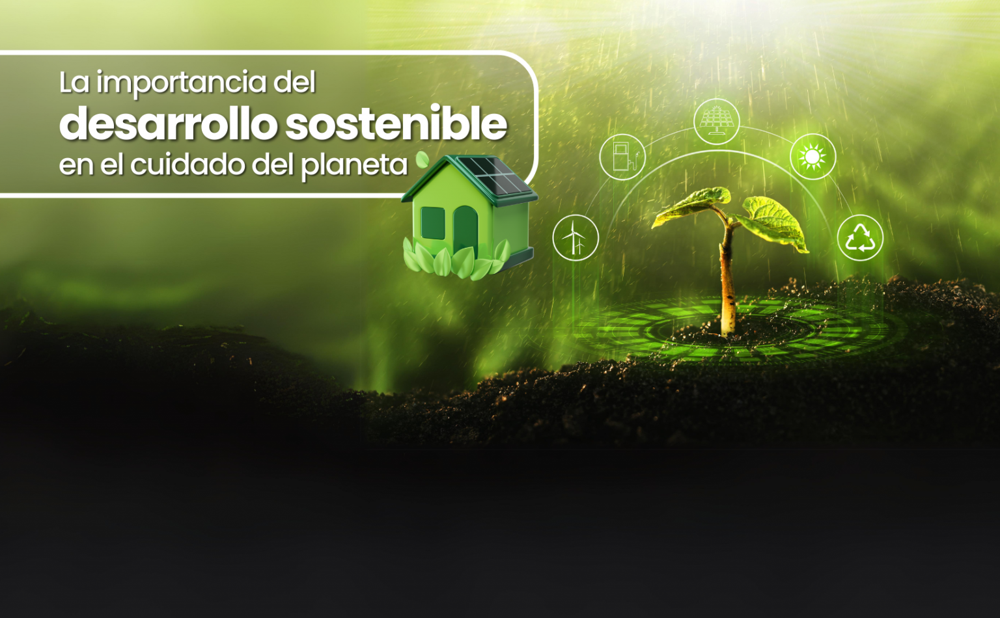

.jpg)
IMPORTANCIA
Vivimos un tiempo muy importante y tenemos el reto de conservar la Tierra. Todos los pueblos y todas las culturas del mundo formamos una sola y gran familia; por esto, nos debemos unir para respetar la naturaleza, garantizar los derechos humanos y convivir en paz y justicia. Somos responsables de la vida, tenemos que preservarla para nuestro bienestar y el de las futuras generaciones.
El cuidado del planeta es vital para garantizar la supervivencia humana, la biodiversidad y el bienestar general, ya que dependemos de sus recursos. La degradación ambiental y el cambio climático exigen acciones urgentes y sostenibles para preservar la vida y los ecosistemas, beneficiando tanto a las generaciones actuales como a las futuras.
Cuidar nuestro planeta es una necesidad urgente y vital, no solo para preservar la naturaleza, sino para garantizar la supervivencia de la propia especie humana. La Tierra es nuestro único hogar y nos proporciona elementos esenciales como aire limpio, agua potable, alimentos y recursos para la vida.
¿Por qué es importante cuidar el planeta?
Supervivencia Humana y Biodiversidad: El medio ambiente proporciona recursos vitales. La degradación de los ecosistemas pone en peligro a millones de especies, incluyendo a los humanos.
.jpg)
Regulación Climática: Los ecosistemas saludables, como bosques y océanos, actúan como defensa contra el cambio climático y fenómenos meteorológicos extremos.
Salud Pública: La contaminación atmosférica y del agua afecta gravemente la salud, reduciendo la calidad de vida y aumentando enfermedades.
.jpg)
Recursos Vitales: Elementos como el agua potable y los suelos fértiles para la agricultura son limitados y esenciales para la vida diaria.

Estabilidad Planetaria: La Tierra tiene límites naturales que no deben sobrepasarse para evitar el colapso ecológico.
Supervivencia y Salud: El equilibrio del ecosistema es crucial para evitar enfermedades respiratorias y asegurar recursos básicos.
Biodiversidad y Ecosistemas: La protección de especies y hábitats mantiene los ciclos naturales y el equilibrio del planeta.
.jpg)
Recursos Limitados: El consumo responsable y el reciclaje son fundamentales porque los recursos naturales no son infinitos.
Mitigación del Cambio Climático: Reducir la huella de carbono y usar energías renovables es esencial para disminuir la degradación ambiental.
